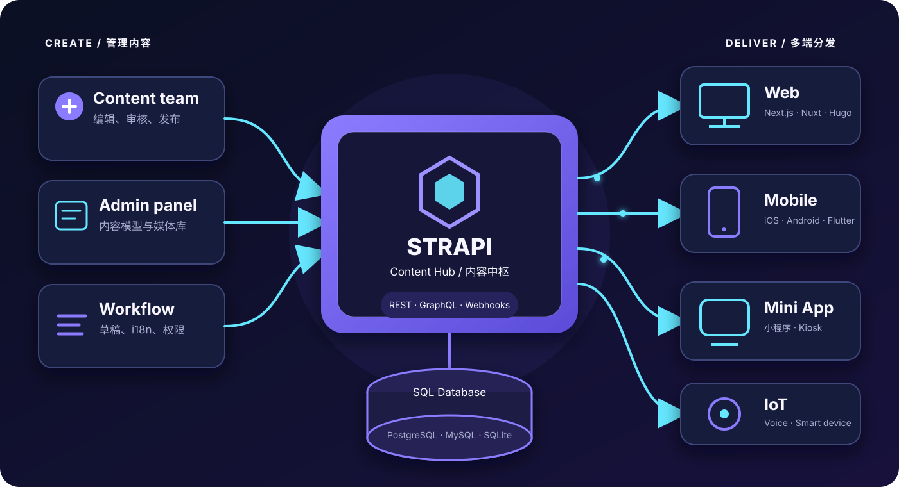
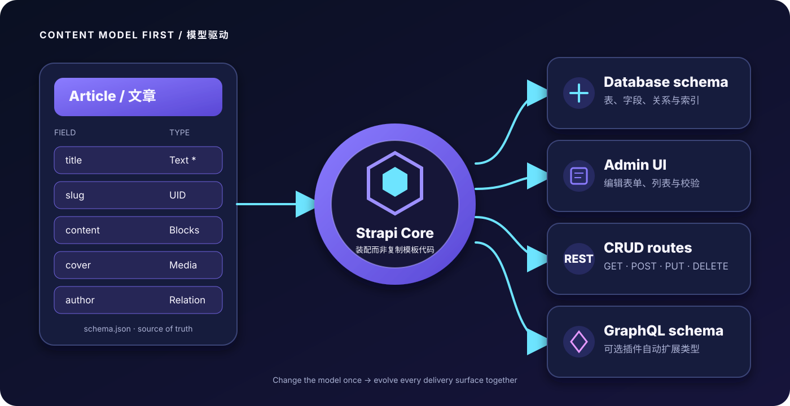
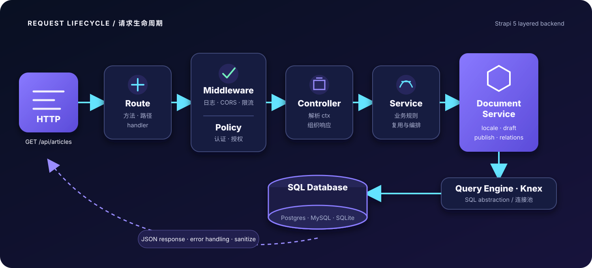
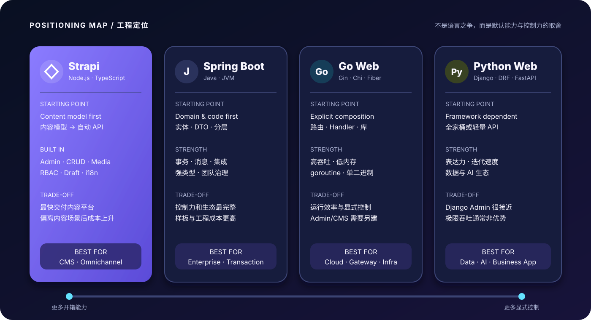

Strapi 全解：从 Headless CMS 到可定制的 Node.js API 后端
如果一个项目既需要“让运营人员自己维护内容”，又需要“让网站、App、小程序共享同一套 API”，从零编写管理后台、权限、文件上传和 CRUD 往往很不划算。Strapi 的价值，就是把这些重复工作变成可配置的基础设施，同时保留继续写代码的出口。
本文以 Strapi 5 为基准。读完你会弄清四件事：Strapi 到底是什么、它用了哪些技术、内容模型如何变成后端 API，以及它与 Java、Go、Python 后端真正的区别。
一、Strapi 是什么？
Strapi 是一个开源、可自托管的 Headless CMS（无头内容管理系统），也是一个以内容为中心的 Node.js 后端框架。
这里的“无头”不是没有管理界面，而是不绑定面向访客的前端页面：
- 内容团队在 Strapi Admin 中录入文章、商品、活动和媒体；
- Strapi 将内容保存到数据库，并通过 REST 或 GraphQL 提供；
- React、Vue、Next.js、Nuxt、Flutter、小程序甚至 IoT 设备都可以消费同一份内容；
- 前端如何渲染、部署到哪里，与 CMS 后端彼此独立。

Strapi Headless 架构：一份内容通过 API 分发到多个终端传统 CMS 通常把“内容管理”和“页面模板”绑在一起；Strapi 只负责内容与 API。它更像一个带可视化建模、管理后台和权限系统的后端工程脚手架。
先纠正一个比较口径： Strapi 不是和 Java、Go、Python 同一层级的东西。Strapi 是一套成品框架与 CMS；Java、Go、Python 是语言及其后端生态。更合理的比较对象是 Strapi vs Spring Boot、Go Web 框架、Django/DRF 或 FastAPI。
二、Strapi 的核心特点
| 特点 | 它解决了什么问题 | 需要注意什么 |
|---|---|---|
| 可视化内容建模 | 用 Content-Type Builder 定义字段、关系、组件和动态区域 | 复杂领域模型仍需代码设计，不能把建模完全交给运营 |
| 自动 REST API | 创建内容类型后自动获得增删改查接口 | 内容类型默认私有，必须配置权限或 Token |
| GraphQL 支持 | 安装 GraphQL 插件后，根据模型生成查询与 Mutation | 需要控制查询深度与复杂度，避免昂贵请求 |
| 完整管理后台 | 内容编辑、媒体库、草稿发布、国际化等开箱即用 | 深度定制 Admin 会进入 React 前端开发范畴 |
| 可扩展后端 | 可写 Route、Policy、Middleware、Controller、Service 和生命周期逻辑 | 自定义逻辑越多，越应补齐测试与分层 |
| 多数据库支持 | 支持 SQLite、PostgreSQL、MySQL、MariaDB | Strapi 5 不支持 MongoDB，也不适合直接接管既有数据库 |
| API 安全能力 | Public/Authenticated 角色、API Token、字段和操作权限 | “有权限系统”不等于自动安全，仍要做限流、审计和密钥管理 |
| 自托管与云部署 | 代码和数据可掌握在自己手中，也可使用 Strapi Cloud | 自托管时，升级、备份、监控与扩容由团队负责 |
它最突出的优势不是“某个接口跑得最快”，而是把一组常见需求一次交付：
数据库模型 + CRUD API + 内容后台 + 权限 + 媒体 + 发布工作流。
这正是内容型项目中最耗费重复劳动的部分。
三、Strapi 的技术栈
从外到内看，一套典型 Strapi 5 应用包含这些层次：
| 层次 | 主要技术 | 职责 |
|---|---|---|
| 运行时 | Node.js | 运行 JavaScript / TypeScript 后端，擅长 I/O 密集型请求 |
| 开发语言 | TypeScript 或 JavaScript | 编写配置、控制器、服务、策略与插件 |
| HTTP 层 | Koa 生态与 Strapi 路由层 | 接收请求、执行中间件并构造响应 |
| 管理后台 | React + Strapi Design System | 提供内容管理与系统配置界面 |
| 数据访问 | Strapi Document Service / Query Engine | 统一处理内容、文档、多语言与草稿发布语义 |
| SQL 抽象 | Knex | 连接 SQLite、PostgreSQL、MySQL 等关系数据库 |
| API | REST；可选 GraphQL 插件 | 向不同终端分发内容 |
| 扩展机制 | Plugin、Provider、Middleware、Policy、Lifecycle | 对接对象存储、邮件、鉴权和业务逻辑 |
Strapi 5 中的 Document 值得单独理解：同一篇内容可能同时有草稿版、发布版和多个语言版本，documentId 用来标识它们所属的逻辑文档。因此，单条 REST 接口使用的是：
|
|
而不是旧教程中常见的数字 id。此外，Strapi 5 的响应已经扁平化，字段直接位于 data 对象中，不再放在 data.attributes 里。
四、它是怎么“生成”后端 API 的？
Strapi 的核心思路是 Content Model First：先描述内容结构，再由框架装配数据库结构、管理表单和 API。

从内容模型到数据库、管理后台与 REST/GraphQL API假设我们创建一个 Collection Type：Article，并定义以下字段：
| 字段 | 类型 | 约束 |
|---|---|---|
title |
Short text | 必填 |
slug |
UID | 基于 title，唯一 |
summary |
Long text | 可选 |
content |
Blocks / Rich text | 正文 |
cover |
Media | 单张图片 |
author |
Relation | 多篇文章属于一个作者 |
featured |
Boolean | 默认 false |
保存模型后，Strapi 会完成几件事：
- 把模型保存为项目中的 schema；
- 同步对应的数据库表、列和关系；
- 在 Admin 中生成文章编辑表单和列表；
- 注册核心 Controller 与 Service；
- 注册
/api/articles的 REST CRUD 路由； - 如果安装了 GraphQL 插件，再把模型加入 GraphQL Schema。
REST 接口随即具备下面这些约定：
| 动作 | 方法与路径 |
|---|---|
| 查询列表 | GET /api/articles |
| 查询单篇 | GET /api/articles/:documentId |
| 创建 | POST /api/articles |
| 更新 | PUT /api/articles/:documentId |
| 删除 | DELETE /api/articles/:documentId |
4.1 从零跑起一个 API
|
|
打开 http://localhost:1337/admin 创建管理员，然后在 Content-Type Builder 中建立 Article。
新内容类型默认是私有的。你可以在 Settings → Users & Permissions 中仅开放 find、findOne，也可以给服务器端调用者创建 API Token。生产环境更推荐最小权限 Token，而不是把写接口设为 Public。
查询已发布文章：
|
|
按条件过滤，并显式取回封面与作者：
|
|
创建文章时，业务字段必须包在 data 中：
|
|
一个典型的 Strapi 5 列表响应如下：
|
|
常见坑： 关系、媒体、组件和 Dynamic Zone 默认不会被填充。不要习惯性使用
populate=*拉取一切；生产环境应明确选择字段和关联，控制响应体积与数据库查询成本。
4.2 自动 CRUD 不够时怎么办？
Strapi 并没有把你锁在自动生成代码里。比如要增加 GET /api/articles/featured，可以写自定义路由、控制器和服务：
|
|
|
|
|
|
请求进入后，并不是 Controller 直接拼 SQL，而是沿着分层链路运行：

Strapi 请求链路：Route、Middleware、Policy、Controller、Service、Document Service 到数据库- Route 决定方法、路径和处理器；
- Middleware 处理日志、CORS、限流、请求改写等横切逻辑；
- Policy 判断当前身份能否执行该动作；
- Controller 读取 HTTP 上下文并组织响应；
- Service 承载可复用业务逻辑；
- Document Service 处理文档、语言、草稿/发布等 Strapi 语义；
- Database / Knex 才最终访问关系数据库。
这种分层和 Spring Boot、Django 的 Controller/Service/Repository 思路并不陌生；区别在于 Strapi 已经替你实现了大量默认层。
五、与 Java、Go、Python 后端有什么区别？
先看一张定位图：

Strapi、Spring Boot、Go Web 与 Python Web 后端的工程定位对比| 维度 | Strapi（Node.js/TS） | Java（Spring Boot） | Go（Gin/Chi/Fiber 等） | Python（Django/DRF/FastAPI） |
|---|---|---|---|---|
| 起步方式 | 内容模型优先，自动生成 CRUD 与 Admin | 代码优先，显式设计实体、接口与分层 | 代码优先，组合库并显式实现 | Django 偏全栈；DRF/FastAPI 以代码定义 API |
| 首个内容 API | 非常快，分钟级 | 较慢，但工程规范与能力完整 | 较快，但后台、权限、媒体需另配 | Django + Admin 很快；FastAPI 仍需管理端 |
| 管理后台 | 一等公民，面向内容团队 | 通常另做或采购 | 通常另做 | Django Admin 强；FastAPI 默认无 |
| 类型系统 | TypeScript 静态检查，运行时仍是 JS | 强静态类型，编译期约束成熟 | 简洁强类型，编译快 | 动态类型为主，可用 type hints / Pydantic |
| 并发模型 | 事件循环，适合 I/O 密集型 | 线程池/虚拟线程，生态成熟 | goroutine 轻量并发 | async 可处理 I/O；CPU 密集受解释器模型影响 |
| 性能与资源 | 通常足够支撑内容 API，不以极限吞吐见长 | 吞吐稳定，但 JVM 启动与内存成本较高 | 吞吐高、内存低、单二进制部署 | 开发效率高，极限吞吐通常不是优势 |
| 事务与复杂领域 | 能做，但 CMS 抽象不适合所有复杂交易 | 强项：事务、DDD、消息与企业集成 | 显式、可控，但很多能力要自行组合 | Django ORM 事务成熟；复杂系统仍需严谨分层 |
| 可定制性 | 默认能力多，越偏离内容 CRUD 定制成本越高 | 几乎不设上限，但样板和工程成本更高 | 控制力强、魔法少 | 从 Django 的“全家桶”到 FastAPI 的轻量均可选 |
| 部署形态 | Node 应用 + 数据库 + 媒体存储 | JVM/JAR/容器 | 单二进制或容器 | Python 运行时 + WSGI/ASGI 服务器 |
| 最适合 | CMS、官网、多渠道内容、产品目录 | 核心交易、复杂企业系统、大型团队 | 高性能服务、网关、云原生基础设施 | 数据/AI 服务、业务后台、快速 API 开发 |
5.1 Strapi vs Java：默认能力与领域控制力
Spring Boot 通常从领域模型、DTO、Repository、Service、Controller 一层层搭建。前期代码更多，但复杂事务、消息中间件、审计、强类型契约和大型团队治理都很成熟。
Strapi 则先送你一套能用的内容平台。对于“文章、作者、分类、媒体、国际化”这类模型，它能省掉大量工作；但如果系统核心是支付清算、库存扣减、复杂审批或跨服务事务，Java 的显式领域模型通常更稳妥。
5.2 Strapi vs Go：交付速度与运行效率
Go 服务倾向于少魔法、显式依赖和小体积部署。它能用更少内存提供很高吞吐，特别适合网关、基础设施和高并发微服务。
代价是 Go Web 框架很少直接送你内容后台、媒体库、草稿发布与细粒度内容权限。若项目主要是内容运营，Strapi 更快；若核心目标是极低延迟、资源效率或简单可靠的服务进程，Go 更合适。
5.3 Strapi vs Python：与 Django 最像，但重心不同
Django Admin 让 Python 阵营也能快速得到数据管理后台，Django REST Framework 再提供序列化、权限和 API。因此 Django/DRF 是这里与 Strapi 最接近的组合。
区别在于：Django 更像通用 Web 框架，Admin 主要服务内部数据管理；Strapi 从一开始就围绕“结构化内容、多渠道分发、编辑体验”设计。FastAPI 则更轻，特别适合类型清晰的 API、数据和 AI 服务，但不会自动给你完整 CMS。
六、什么时候该选 Strapi？
很适合
- 企业官网、营销站、新闻与博客；
- 多语言、多品牌、多终端共享内容；
- App、小程序、网站共用文章、Banner、活动和配置；
- 产品目录、案例库、帮助中心；
- 前端团队需要快速获得可用后端，内容团队又必须独立编辑；
- MVP 中大量需求属于标准 CRUD + 内容工作流。
谨慎选择
- 银行账务、支付、交易撮合、复杂库存等强事务核心；
- 需要直接接管庞大既有数据库的系统；
- 大量 CPU 密集计算、极端低延迟或极限吞吐服务；
- API 主要是复杂动作和跨域编排，内容 CRUD 只占很小比例；
- 团队完全没有 Node.js/TypeScript 运维与升级经验。
一个很实用的组合是：
|
|
不要强迫一项技术包办所有问题。Strapi 可以是系统中的“内容服务”，而不是整个后端。
七、生产落地的 8 条建议
- 生产使用 PostgreSQL 或 MySQL。 SQLite 适合本地体验和轻量场景，不适合多数多实例生产部署。
- 权限遵循最小化。 写接口不要设为 Public，给不同调用方发放不同作用域的 API Token。
- 显式 populate 与 fields。 只查需要的字段和关联，避免查询爆炸与巨大 JSON。
- 把业务逻辑放进 Service。 Controller 只处理 HTTP，Policy 做授权，Service 保持可测试。
- 模型随代码发布。 在开发环境修改内容模型，把 schema 与迁移纳入 Git 和发布流程。
- 媒体放对象存储。 多实例部署不要依赖单机磁盘，可接 S3 兼容存储与 CDN。
- 补齐缓存和可观测性。 热点内容可放 CDN/Redis，同时记录慢查询、错误率和事件循环延迟。
- 升级前阅读迁移说明。 插件与自定义 Admin 是升级风险最高的部分，先在预发布环境验证。
总结
理解 Strapi 的最好方式，不是把它叫作“低代码后端”，而是把它看成：
一个以结构化内容为核心、自动提供管理后台和 API、同时允许继续写 Node.js/TypeScript 代码的 Headless CMS 框架。
它用约定和自动化换取了极高的内容型项目交付速度；Java、Go、Python 通用后端则用更多显式代码换取更广的业务边界、性能特征或生态能力。
选择标准也因此很清楚：
- 核心问题是“怎样高效管理并分发内容”——优先考虑 Strapi；
- 核心问题是“怎样实现复杂交易、极限性能或专用计算”——优先考虑 Java、Go 或 Python；
- 两类问题同时存在——让 Strapi 做内容服务，与核心业务后端协作。
参考资料
- Strapi 5 官方文档
- REST API Reference
- Back-end Customization
- Document Service API
- GraphQL API
- Database Configuration
- Strapi GitHub Repository
本文基于 2026 年 7 月可用的 Strapi 5 官方资料撰写。版本升级可能改变命令、运行时要求和插件行为，落地时请以对应版本文档为准。